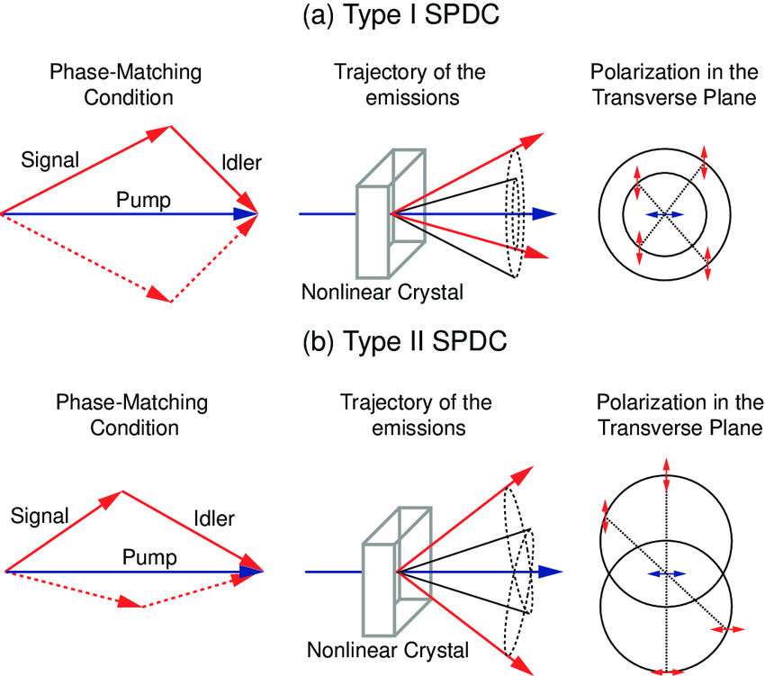
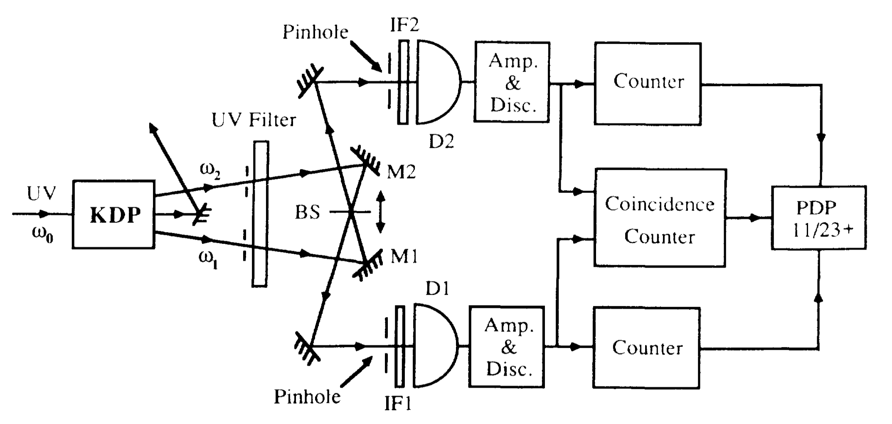

Parametric downconversion (PDC) is a nonlinear optical process where a high-energy photon (pump) splits into two lower-energy photons (signal and idler) while conserving energy and momentum. This process occurs in nonlinear crystals like Beta Barium Borate (BBO) and is one of the most common methods to generate entangled photon pairs.
Nonlinear Optics Primer
Nonlinear means that the polarization generated by the crystal is not proportional to the electric field.
Instead we have
\[
P = \epsilon_0 \chi^{(1)} E + \epsilon_0 \chi^{(2)} E^2 + \epsilon_0 \chi^{(3)} E^3 + \ldots
\]
where \(\chi^{(1)}\) is the linear susceptibility, \(\chi^{(2)}\) is the second-order susceptibility, and \(\chi^{(3)}\) is the third-order susceptibility. The second-order term is responsible for PDC. If the incident wave is a plane wave, the second-order term can be written as:
where \(E_p\) and \(E_s\) are the electric fields of the pump and signal photons respectively. The photons have a frequency \(\omega_p\) and \(\omega_s\) and a wavevector \(\vec{k}_p\) and \(\vec{k}_s\) respectively. Inserting plane wave solutions for the electric fields, we get:
where \(\vec{k}\) represents the wave vectors of the respective photons.
Figure 45.1— Schematic of spontaneous parametric downconversion (SPDC) process. A high-energy pump photon splits into two lower-energy photons (signal and idler) in a nonlinear crystal. The process conserves energy and momentum.
The conservation of momentum results in the signal and idler photons propagating along distinct trajectories. To achieve efficient PDC, the phase matching requirement \(\vec{k}_p = \vec{k}_s + \vec{k}_i\) must be satisfied, which necessitates alignment of both magnitude and directional components of the wave vectors. Since the pump, signal and idler photons have different frequencies, the refractive index of the crystal must be carefully engineered to ensure phase matching. This can be done with the help of birfringent crystals, aperiodic poling, or quasi-phase matching.
The relationship between the wavevectors can then be expressed in terms of refractive indices and frequencies as:
where \(n_p\), \(n_s\), and \(n_i\) are the refractive indices for pump, signal and idler photons respectively. Due to material dispersion, these refractive indices depend on frequency, making perfect phase matching challenging.
For collinear phase matching (where signal and idler propagate parallel to the pump), the condition simplifies to:
while for non-collinear phase matching (where signal and idler propagate at angles relative to the pump), we must consider the vector nature of the relationship.
The phase mismatch \(\Delta k\) quantifies how well the phase matching condition is satisfied:
\[
\Delta k = k_p - k_s - k_i
\]
Perfect phase matching occurs when \(\Delta k = 0\). The efficiency of the PDC process decreases with increasing phase mismatch according to:
\[
\text{Efficiency} \propto \text{sinc}^2(\Delta k L/2)
\]
where L is the crystal length.The phase matching condition can be satisfied by adjusting the angle of the crystal or by using aperiodic poling.

Figure 45.2— Polarization configurations for Type-I and Type-II PDC. In Type-I PDC, the signal and idler photons have the same polarization, perpendicular to the pump polarization. In Type-II PDC, the signal and idler photons have orthogonal polarizations.
In Type-I PDC, matching the energy conservation equations above (\(\hbar\omega_p = \hbar\omega_s + \hbar\omega_i\)), the signal and idler photons have the same polarization, perpendicular to the pump polarization. The process follows:
\[
e \rightarrow o + o
\]
where \(e\) represents extraordinary and \(o\) represents ordinary polarization.
For Type-II PDC, following the momentum conservation requirement (\(\vec{k}_p = \vec{k}_s + \vec{k}_i\)), the signal and idler photons have orthogonal polarizations:
\[
e \rightarrow o + e
\]
In Type-II PDC, the signal and idler photons emerge from the crystal in two distinct cones due to the different refractive indices for ordinary and extraordinary polarizations. These emission cones intersect along two lines. At these intersection points, it becomes impossible to distinguish which cone produced which photon, leading to quantum entanglement.
For a given pump wavelength and crystal orientation, the conservation of energy and momentum determines the exact geometry of these cones. The intersection lines occur where both energy conservation (\(\hbar\omega_p = \hbar\omega_s + \hbar\omega_i\)) and momentum conservation (\(\vec{k}_p = \vec{k}_s + \vec{k}_i\)) are simultaneously satisfied for both possible emission paths.
At these special intersection points, the photon pairs can take either path with equal probability, resulting in a quantum superposition of the two possible polarization states. This quantum state can be written mathematically as:
where \(H_s\) represents horizontal polarization of the signal photon, \(V_i\) represents vertical polarization of the idler photon, and \(\phi\) is a phase factor that depends on the crystal parameters and geometry. The relative amplitude \(1/\sqrt{2}\) ensures proper normalization:
By collecting photon pairs from these intersection points, we obtain polarization-entangled photon pairs that are useful for quantum information applications.
When collecting photons from the intersection points, we can use a polarizing beam splitter (PBS) to separate the photons based on their polarization. The PBS transmits photons with one polarization and reflects photons with the orthogonal polarization. By placing a PBS at each intersection point, we can separate the photons into two distinct paths. This allows us to perform quantum operations on the photons independently, enabling quantum information processing tasks such as quantum teleportation, quantum cryptography, and quantum computing.

Figure 45.3— Experimental setup for measuring the coincidence counts of entangled photon pairs generated by PDC. The photons are collected from the intersection points and sent to two detectors. The coincidence counts are recorded when both detectors detect a photon simultaneously. Taken from [C. K. Hong, Z. Y. Ou, and L. Mandel, Phys. Rev. Lett. 59, 2044 – Published 2 November, 1987] (https://journals.aps.org/prl/pdf/10.1103/PhysRevLett.59.2044)
Code
viewof button =html`<button>Measure Polarization</button>`currentCount = {let count =0;returnfunction() {return++count; };}measurement = {// Only update when button is clickedif (button) {// Randomly decide if we measure H/V or V/H (50-50 chance)const random =Math.random();const result = random <0.5? ['H','V'] : ['V','H'];return {signal: result[0],idler: result[1],count:currentCount() }; }return {signal:'',idler:'',count:0};}// Display the measurement resultshtml`<div style="text-align: center; margin: 20px;"> <div style="display: flex; justify-content: space-around;"> <div style="border: 1px solid black; padding: 20px; margin: 10px;"> <h3>Detector 1 (Signal)</h3> <p style="font-size: 24px;">${measurement.signal}</p> </div> <div style="border: 1px solid black; padding: 20px; margin: 10px;"> <h3>Detector 2 (Idler)</h3> <p style="font-size: 24px;">${measurement.idler}</p> </div> </div> <p>Total measurements: ${measurement.count}</p></div>`